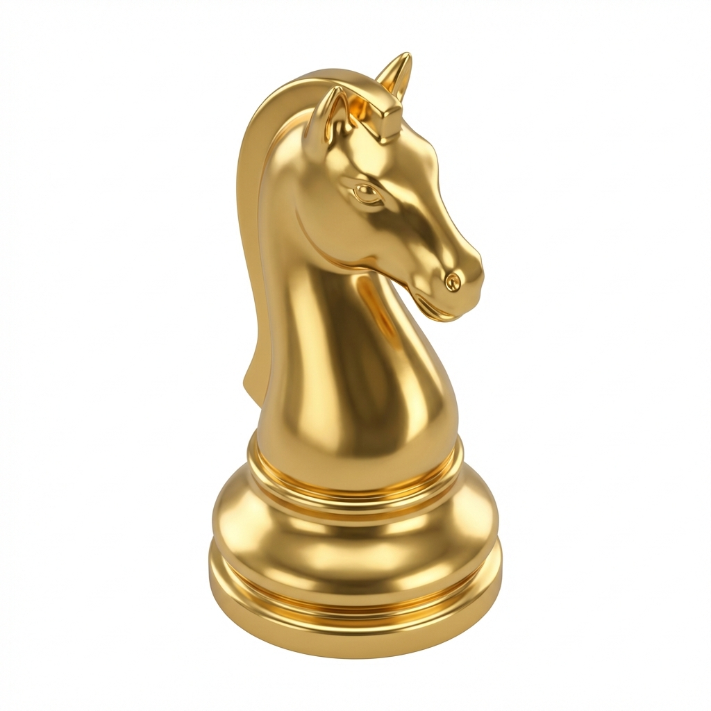

Grandmaster AI
Real-time Stockfish Assistance
Engine Status
Initializing...
Solver Status
Inactive
Activate Solver
Auto Move
Stealth Mode (Hide UI)
Speed Mode
⚡ GM (Bullet 1min)
🎯 Master (Rapid 3-5min)
🔍 Analysis (Hints Only)
Min Delay (ms)
Max Delay (ms)